Step 2: CKEditor AI, AI Automators and field widget actions¶
Goal: editors get AI help while they write. You add an AI menu to the text editor, let AI fill fields from the page content, give editors buttons that run AI on demand, and let AI describe, tag and write alt text for images.
Before you start: you have finished step 1. If you have not, reset your site to the end of step 1:
git checkout 01_setup
ddev catch-up
To skip this step and see the result, check out the branch of this step and catch up:
git checkout 02_automators_ckeditor
ddev catch-up
All examples use the Utility page content type and the Northmoor pages from step 1.
1. Enable the modules¶
ddev drush pm:install ai_ckeditor ai_automators field_widget_actions
| Module | Project | What it does |
|---|---|---|
AI CKEditor (ai_ckeditor) |
AI CKEditor | Adds an AI menu to CKEditor 5. |
AI Automators (ai_automators) |
AI (submodule) | Fills fields with AI, based on other fields. |
Field Widget Actions (field_widget_actions) |
Field Widget Actions | Adds buttons to form fields. The module is a generic framework; the AI buttons come from AI Automators and other modules. |
AI CKEditor and Field Widget Actions used to be part of the AI project. They are now separate projects. The AI project still contains old copies with the same names, but Drupal enables the separate projects.
2. CKEditor AI¶
Module: AI CKEditor (ai_ckeditor), from the separate
AI CKEditor project.
CKEditor AI adds an AI Assistant menu to the text editor. Editors select text and let the AI rewrite, summarize or correct it, or they let the AI write new text. The result is shown in a dialog first, so the editor decides what goes into the page.
Add the AI button to the editor¶
- Go to Configuration › Content authoring › Text formats and editors and configure the Content text format.
- Under Toolbar configuration, move the AI CKEditor button (the first button in Available buttons) into the Active toolbar. Place it at the start, so it does not end up in the overflow menu. You can drag it with the mouse, or select it and use the arrow keys: ↓ adds it to the toolbar, ← moves it to the left.
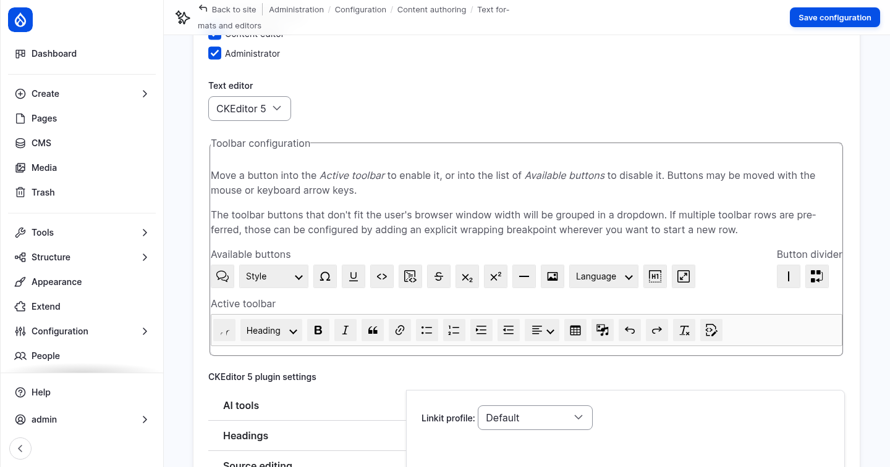
- Under CKEditor 5 plugin settings, open the AI tools tab. Enable these tools:
| Tool | What it does |
|---|---|
| Generate with AI | Writes new text from your instructions. |
| Modify with a prompt | Changes the selected text with your instructions. |
| Fix spelling | Corrects spelling and punctuation, without changing the style. |
| Summarize | Summarizes the selected text. |
Each tool has an AI provider setting. Keep the preselected chat model.
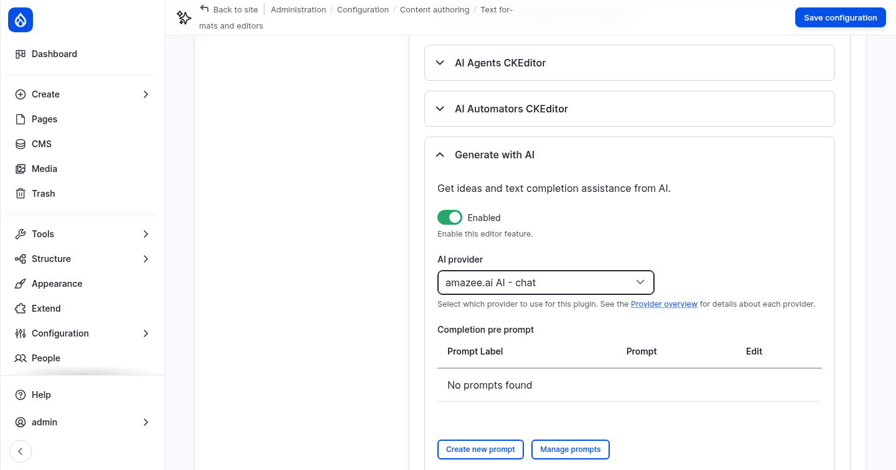
The other tools need more setup. Tone and Translate take their options (the tones, the languages) from a taxonomy vocabulary. AI Agents CKEditor and AI Automators CKEditor connect the editor to agents and automator chains.
- Click Save configuration.
Only users with the permission Use AI CKEditor plugin can use the menu. Administrators have every permission. Give it to content editors too, on the AI CKEditor permissions page, or with:
ddev drush role:perm:add content_editor 'use ai ckeditor'
Use the AI menu¶
- Open the page About Northmoor and click Edit. If Drupal asks about a draft from an earlier visit, click Discard.
- In Content, select the first paragraph.
- Open AI Assistant in the toolbar and choose Modify with a prompt.
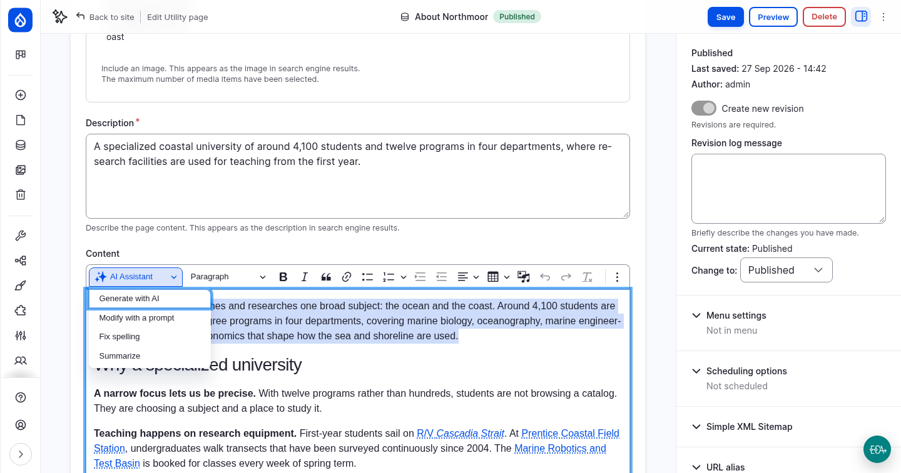
- In Your instructions, enter:
Rewrite this paragraph in a friendly, welcoming tone for prospective students.
- Click Modify text. The answer appears in Response from AI. You can edit it there. Click Save changes to editor to replace the selected text.
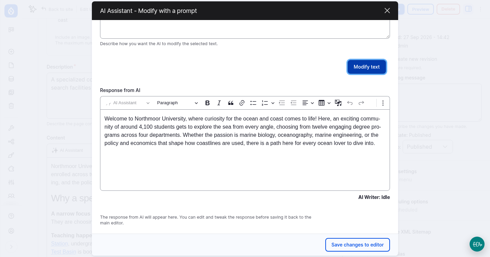
Then try the other tools:
- Put the cursor at the end of the text, choose Generate with AI and ask for a short paragraph about visiting the campus in winter.
- Type a sentence with spelling mistakes, select it and choose Fix spelling.
- Select a long section and choose Summarize.
You do not need to save the page. Leave it without saving if you want to keep the original text.
Where the prompts are¶
Every tool sends a prompt to the AI, together with the selected text and your
instructions. The prompts are editable. Go to Configuration › AI Setup and
Configuration › AI Prompts.
The prompts ai_ckeditor_*__default belong to the CKEditor tools. The AI Prompt
Types tab shows which variables each prompt can use, such as {inputText}.
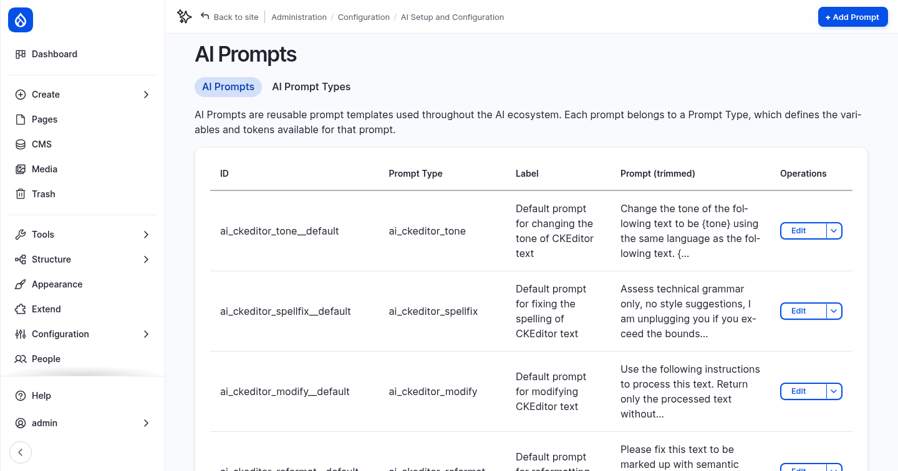
Open AI Logs
to see the full request that CKEditor sent. It is tagged ai_ckeditor.
3. AI Automators¶
Module: AI Automators (ai_automators), a submodule of the AI project.
An automator fills a field with AI. You attach it to a field and tell it where the input comes from (usually another field on the same entity) and what to do with it. Automators exist for almost every field type: text, taxonomy terms, images, links, numbers and more.
A first automator: the page description¶
The Description field of the Utility page is used as the teaser and as the description for search engines. We let the AI write it from the page content.
- Go to Structure › Content types › Utility page › Manage fields and edit Description.
- Check Enable AI Automator, and fill in:
| Setting | Value |
|---|---|
| Choose AI Automator Type | LLM: Text (simple) |
| Automator Input Mode | Base Mode |
| Automator Base Field | Content |
| Automator Prompt | see below |
Prompt:
Summarize the following page text in one or two sentences of at most 250 characters. The summary is used as a teaser for the page. Return only the summary, without quotes or explanations.
{{ context }}
{{ context }} is replaced with the text of the base field, without HTML. Open
Placeholders available to see all placeholders.
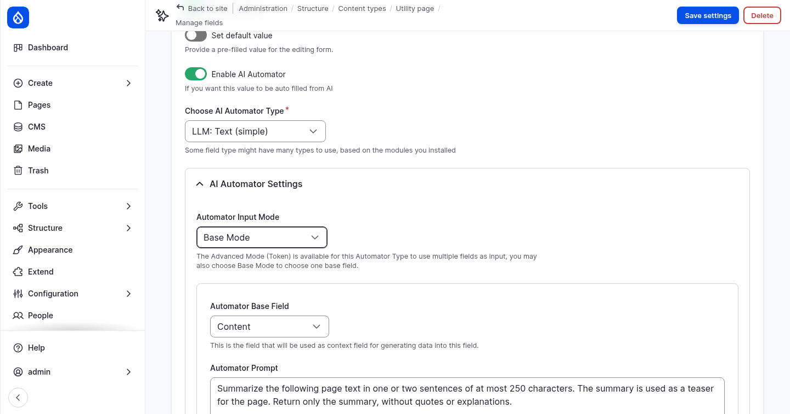
- Open Advanced Settings:
- Under Automator Label, enter
Description from content. The label is shown when you pick the automator for a button in the next section. - Under Automator Worker, choose Field Widget.
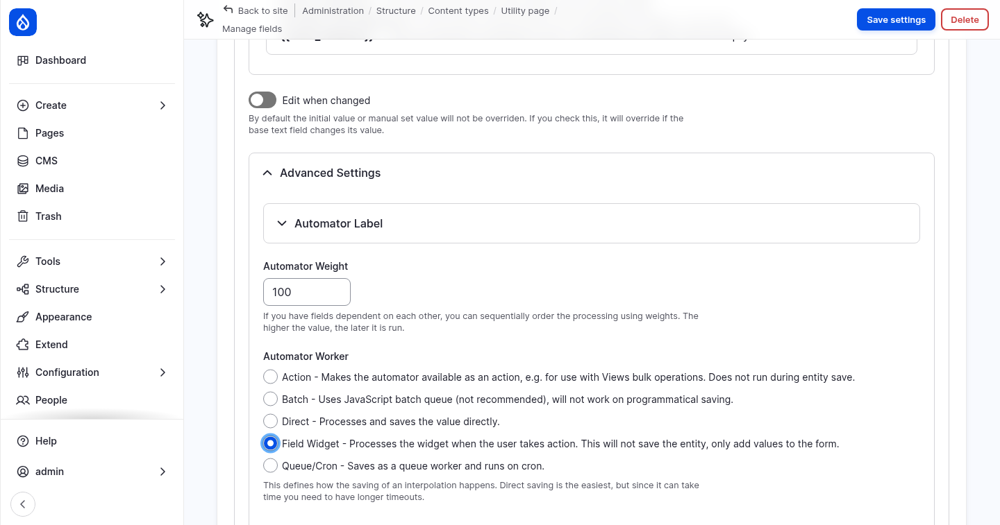
- Click Save settings.
The automator settings explained¶
Automator types. The list depends on the field type. For a plain long text field you can choose: - LLM: Text (simple): one prompt, one answer. - LLM: Text: can return several values. - Summarize: uses the summarize operation of the AI provider.
Input mode.
- Base Mode uses one field as input, as {{ context }} in the prompt.
- Advanced Mode (Token) builds the prompt from tokens instead, such as [node:title]
and [node:field_content], so it can combine several fields.
Edit when changed. By default an automator only fills an empty field. With this option, it also overwrites the value when the base field changes.
Automator Weight. When one automator uses the result of another, the weight sets the order: higher weights run later.
Automator Worker. This decides when the automator runs:
| Worker | When it runs |
|---|---|
| Direct | When the entity is saved. The value is saved directly. |
| Field Widget | When the editor clicks a button next to the field. It only fills the form and does not save. |
| Queue/Cron | Later, in a queue that runs on cron. Useful for slow requests or many entities. |
| Batch | In a JavaScript batch after saving. Not recommended; it does not run when content is saved by code. |
| Action | Only as an action, for example as a bulk operation in a content view. |
We use Field Widget for the description, because the field is required. Drupal does not save the form while a required field is empty, so an automator that runs on save would come too late. With a button, the editor fills the field before saving, and can review and change the text.
AI Provider. By default, automators use the default model for chat with complex JSON from the AI settings. You can pick a specific provider and model per automator.
Guardrail set. An automator can use a guardrail set, for example the Workshop security set from step 1. Input and output are then checked, and a blocked run leaves the field unchanged.
All automators are listed under Configuration › AI Setup and Configuration › AI Automators › AI Automator Configuration.
4. Field widget actions¶
Modules: Field Widget Actions (field_widget_actions), from the separate
Field Widget Actions project,
provides the buttons. The Automator Text Suggestion action comes from AI Automators
(ai_automators).
A field widget action is a button next to a form field. An AI action button runs an automator and puts the result into the field, without saving the entity.
Add a button to the Description field¶
- Go to Structure › Content types › Utility page › Manage form display.
- Click the gear icon of the Description field to open its widget settings, then open Field Widget Actions.
- In Add New Action, choose Automator Text Suggestion and click Add action. The list only shows actions that fit the field type and widget. The automator action only appears when the field has an automator.
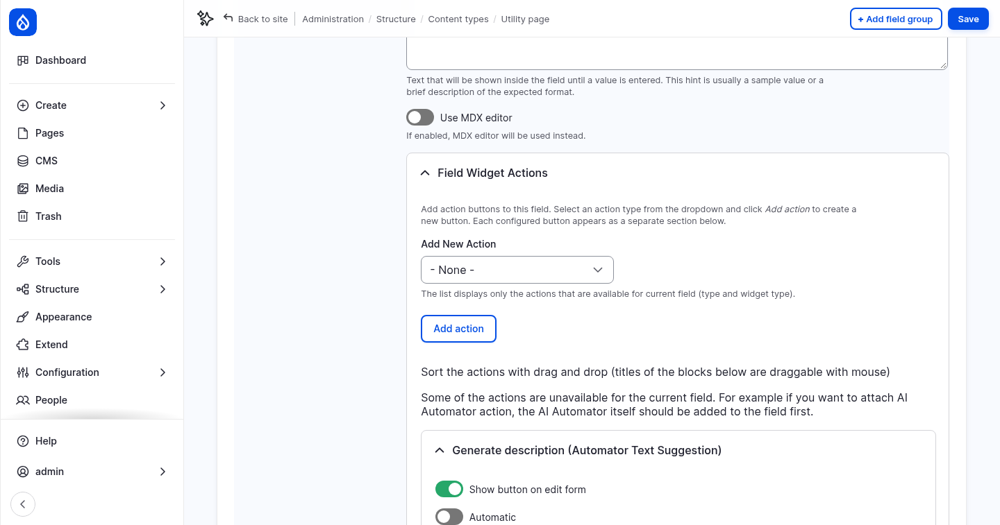
- Configure the new action:
| Setting | Value |
|---|---|
| Show button on edit form | On |
| Button label | Generate description |
| Enable an Automator › Automator to use for suggestions | Description from content |
Two more options are worth knowing: - Automatic runs the action when the form loads, without a click. - Enable interactive refinement shows the result in a dialog, where the editor can refine it with more instructions before inserting it.
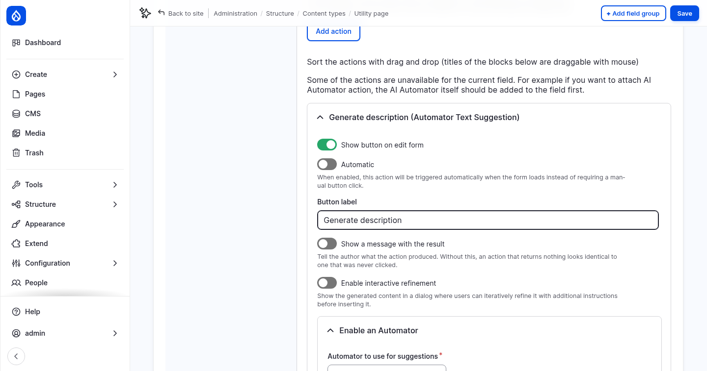
- Click Update, then Save.
Use the button¶
- Open the page About Northmoor and click Edit.
- Clear the Description field.
- Click Generate description. After a few seconds, the field contains a new summary of the page content.
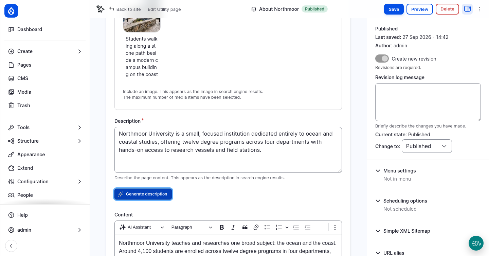
The page is not saved yet. Review the text, change it if needed, then save the page, or leave without saving.
Field widget actions exist for many field types: alt text for images, taxonomy terms, images generated from text, links, numbers and more. Other modules can add their own actions.
5. An automator that runs on save: tags¶
The Tags field is empty on all pages. This automator adds tags whenever a page is saved, with no button.
- Edit the field Tags of the Utility page, and check Enable AI Automator:
| Setting | Value |
|---|---|
| Choose AI Automator Type | LLM: Taxonomy |
| Automator Input Mode | Base Mode |
| Automator Base Field | Content |
| Automator Prompt | see below |
| Advanced Settings › Automator Label | Tags from content |
| Advanced Settings › Automator Worker | Direct |
| Advanced Settings › Find similar tags | Off |
Prompt:
Choose up to 5 short tags (one to three words each) that describe the main topics of the page text below. Reuse existing tags when they fit. Existing tags: {{ value_options_comma }}
Page text:
{{ context }}
{{ value_options_comma }} lists the existing terms of the vocabulary. The Tags field
allows new terms to be created, so the automator can add new tags.
Leave Find similar tags off. It asks the AI in a second request whether a new tag is almost the same as an existing one. When the AI finds none, it correctly answers with an empty list, but the current version of AI Automators does not accept that answer. The automator then fails, the page is saved without tags, and the log shows The response was not a valid JSON response. The response was: [].
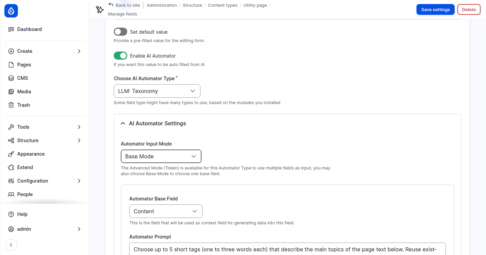
- Click Save settings.
- Open the page BS in Marine Biology, click Edit, and click Save without changing anything.
- Edit the page again. The Tags field now contains tags that the AI chose.
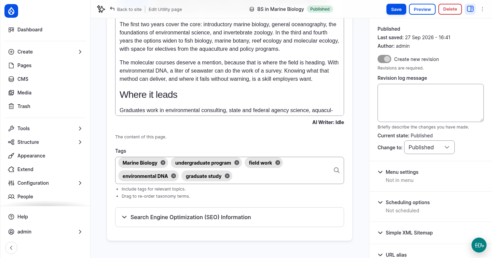
The automator only runs when the Tags field is empty. Saving takes a little longer, because Drupal waits for the AI.
Open AI Logs
again. The automator requests are tagged with the automator, the entity and the field,
for example ai_automator:id:node.page.field_tags.default.
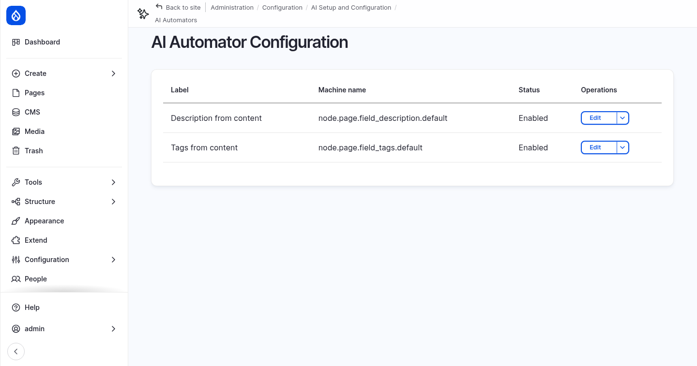
More to try¶
- Add an Automator Taxonomy button to the Tags field. The Tags field uses the Tagify widget, which supports this action. It works well next to the automator that runs on save.
- Add automators to SEO title and SEO description in Advanced Mode (Token), with a prompt like: Write a page title of at most 60 characters for search engines, based on [node:title] and [node:field_content]. Return only the title. Give them a button each.
- Attach the Workshop security guardrail set to an automator and try to trigger it with page content.
6. Images: alt text and image classification¶
Recipes: AI Image Alternative Text
(ai_recipe_image_alt_text) and
AI Image Classification
(ai_recipe_image_classification). They are separate projects. They do not add new
features; they configure AI Automators and Field Widget Actions, the modules you just
used, for the Image media type. The classification recipe also installs
Views Bulk Operations.
You apply them and then look at what they configured, instead of building it by hand.
Apply the recipes¶
ddev drush recipe ../recipes/ai_recipe_image_alt_text
ddev drush recipe ../recipes/ai_recipe_image_classification
The recipes add to the Image media type:
| Field | Automator | Model | Worker |
|---|---|---|---|
Alternative text (of field_media_image) |
Image Vision (llm_image_alt_text) |
Default vision model | Field Widget: a Generate Alt Text button |
Image Description (field_image_description, new) |
Image Description Default (llm_simple_string_long) |
Default vision model | Direct: on save |
Image Tags (field_image_tags, new, vocabulary Image Classification) |
Image Tags Default (llm_taxonomy) |
Default JSON model | Direct: on save, after the description |
Turn off Find similar tags for Image Tags. The recipe switches on Find similar tags for the two Image Tags automators. It fails in the same way as described for the page tags above. Turn it off:
ddev drush config:set ai_automators.ai_automator.media.image.field_image_tags.default plugin_config.automator_search_similar_tags 0 -y
ddev drush config:set ai_automators.ai_automator.media.image.field_image_tags.action plugin_config.automator_search_similar_tags 0 -y
For the first one you can also uncheck Find similar tags in the settings of the Image Tags field. The second one, for bulk actions, has no form for this setting.
They also add: - Two more automators, Image Description Action and Image Tags Action, with the Action worker. They run as bulk actions on existing images. - Two bulk actions in the media list: AI: Image Description and AI: Image Tags. - Filters for description and tags in the media list and the media library.
Open AI Automator Configuration to see the new automators, and open them to read their prompts:
- Image Vision uses token mode, with the language of the media item
(
[media:language:name]), and asks for an accessible alt text under 100 characters. - Image Description Default asks for a detailed description (colours, style, people, objects) for search. The model receives the image itself; it is a vision request.
- Image Tags Default uses base mode, with Image Description as the base field. It does not look at the image, but classifies the text description. That is why its weight is 101: it runs after the description automator (weight 100).
Generate alt text¶
- Go to the media list and edit the image A research vessel leaving the harbour at dawn.
- Clear Alternative text and click Generate Alt Text. The AI looks at the image and writes a new alt text.
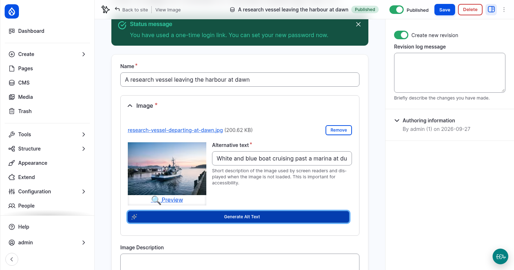
Describe and tag an image on save¶
Image Description and Image Tags are empty. Click Save. The two automators that run on save fill them in. Saving takes a few seconds longer. Then edit the image again:
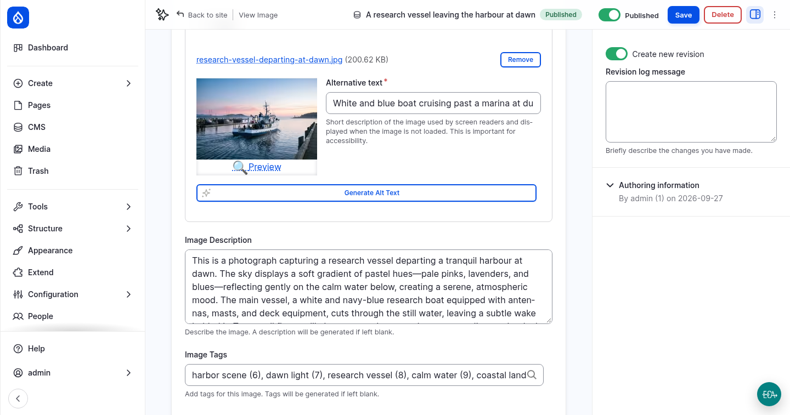
The field help says so too: A description will be generated if left blank. Every new image that editors upload is described and tagged this way.
Classify existing images in bulk¶
The other 19 images were created before the automators existed. Classify them with the bulk actions:
- In the media list, select a few images (three to five are enough; each one is an AI request).
- In Action, choose AI: Image Description and click Apply to selected items.
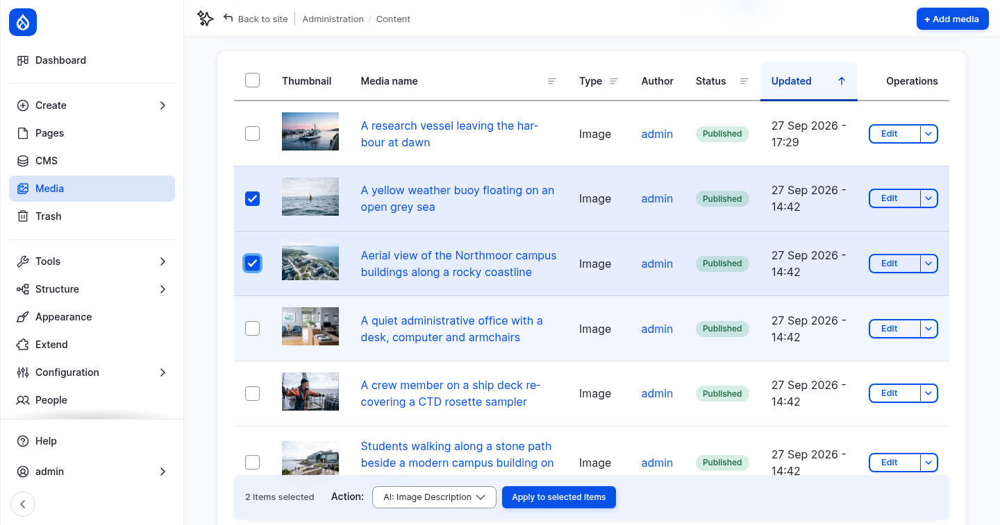
- Select the same images again, choose AI: Image Tags and apply. The tags are based on the description, so run the description first.
Find images by description and tags¶
Open the media library grid. It now has Description
and Tags filters. Search for harbour in Description. The filter searches the
text that the AI wrote, so it finds images by what they show, not only by their name.
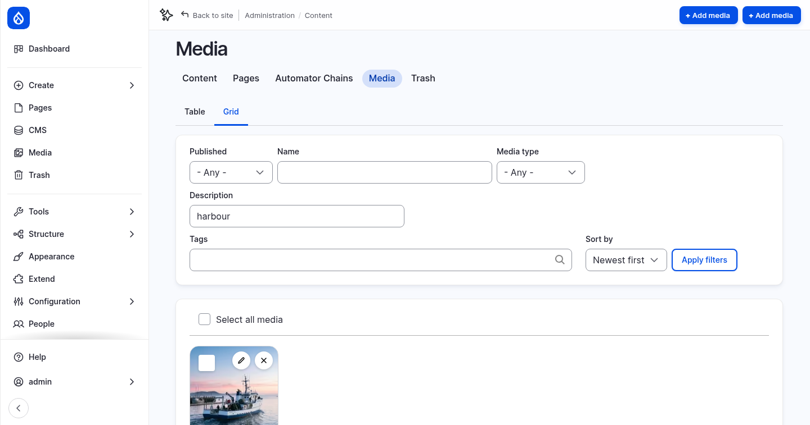
The same filters are in the media library dialog that editors use to pick an image for a page. The tags are terms in the Image Classification vocabulary, which starts empty and grows as images are tagged.
Checkpoint¶
You now have:
- an AI Assistant menu in the text editor, with four tools
- an automator for the Description field, and a Generate description button that runs it
- an automator that adds tags to a page when it is saved
- a Generate Alt Text button for images, and images that are described and tagged on save or in bulk
If something does not work, reset your site to the end of this step:
git checkout 02_automators_ckeditor
ddev catch-up